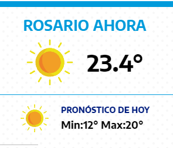

 In Search of Fall Colors: A Long Drive on New Hampshire Roads Sports At the Mets’ Home Finale, Change Was in the Air Cherish the Fe el-Good Stories. They Won’t Last. In one moment, Messi and P.S.G. Make it all work Health Cancer Without Chemotherapy: ‘A Totally Different World’ ‘I Need an Army’: Across America, Schools Cram for Their Covid Tests How Accurate Are At-Home Covid Tests? Most Read In a Surge of Military Flights , China Tests and Warns Taiwan Romans Choose From a Crowded Field to Run a Chaotic City Saving a Vibrant History, One Frame at a Time He Sees Migrants as ‘Modern Slaves,’ and Has Devoted His Life to Helping Them